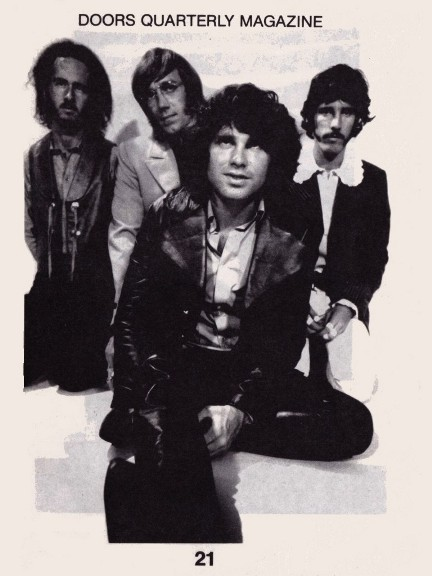

| |

Depending
on your computer's safety settings (antivirus, firewall,
etc.)
the download may generate a standard warning, that is
because the
magazine is a flipbook in the .EXE file format. We
guarantee that
the file is absolutely harmless
and perfectly safe. |
|

A new
window will open with the magazine for you to read online
without the need to download it onto your computer.
Again, we guarantee that it's absolutely
harmless
and perfectly safe. |
|
| |
 |
|
The Doors
Quarterly #21 was published in the fall of 1989, shortly
after I had returned from
my second trip to Los Angeles where I had met (how I
called it) 'The Doors family': I taped
interviews with Robby Krieger, John Densmore and Danny
Sugerman in L.A., and with Frank
& Kathy Lisciandro in Santa Barbara. I met Ray Paret
and Linda Kyriazi (who worked for
Robby Krieger) and Rich Linnell, one of The Doors' former
promoters plus a few other nice
and helpful people. I visited Henry Diltz at his house in
North Hollywood and saw a great
'Wild Child' concert at the Roxy on the Sunset Strip.
What an unforgettable trip that was including all the
sights a Doors fan has to see!
Check the travel report my ex wife wrote for this DQ #21.
Check part three of my Robby Krieger interview, as well
as an extended review of the
famous "Rock is Dead" vinyl bootleg along with
"Copulations", the first vinyl including
songs from the Toronto Pop Festival in 1969. Furthermore,
I complain about Italian
bootleg CDs (made from vinyl bootlegs). Then you might
want to check the first ever
attempt to transcribe a tape of The Doors' Miami concert
and an excellent article
(interview) on Ray's keyboard equipment and his skills
taken from 'Modern Keyboard',
March 1989.
'Peering through the keyhole into the future' is an
article on The Doors from yesteryear
(date and source unknown). Also Jim's first Elektra
Records biography sheet is to be
seen in this DQ (note: I added my old address at the
bottom, sorry! How could I?!).
For DQ #21, Doors fan Ko Lankester provided the first
part of his interview with Patricia
Kennealy-Morrison, and I myself couldn't resist writing a
review of the 'Wild Child'
show at the Roxy on July 3rd, 1989.
There wasn't the usual free poster but certainly #21 did
come with a fine new golden
bumper sticker. Enjoy your digital version and let us
know what you think ... we will
continue soon by publishing a digital version of DQ 20.
CU and have fun!
Thanks to Kevin Chiotis for all of his work!
A splendid time is guaranteed for all!
And don't forget:
Please note that your digital copy of The Doors Quarterly
Magazine 21 hasn't been
altered in any way. You get it as it was published in the
fall of 1989 (!). Be aware that
all addresses (private, phone) are certainly no longer
valid (including the contact
address for Henry Diltz). Books, vinyl albums, CDs or
posters and other stuff might
not be available any longer. Please do not respond to any
of the small ads or blame
anyone for incorrect details - all writers just did the
best they could back in 1989.
And all this happened without any computers or emails and
of course, without
the internet. Everything got typed on an electric
typewriter and the bigger letters for
headings used to be rub-off letters on small plastic
sheets.
PS: ... if you would like to obtain an original paper
copy of this Doors Quarterly
Magazine 21, be aware that we only have very few copies
left!
Thank you!
Rainer Moddemann.
|
|